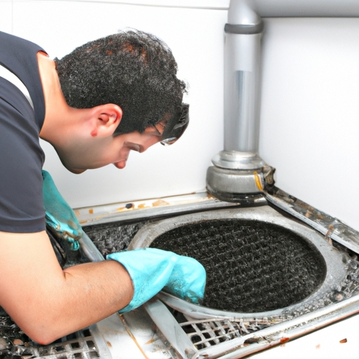

News
Emergency Plumbing Service
Emergency Plumbing Service
Burst pipe repair
Clogged drain cleaning
Water heater repair
Toilet repair
Burst Pipe Repair
Burst Pipe Repair
Causes of burst pipes
Signs of a burst pipe
Steps to take when a pipe bursts
Tools needed for pipe repair
Prevention tips for burst pipes
Clogged Drain Cleaning
Clogged Drain Cleaning
Common causes of clogged drains
DIY methods for unclogging drains
Professional drain cleaning services
Preventing future clogs in drains
Chemical vs natural drain cleaners
Water Heater Repair
Water Heater Repair
Signs of water heater problems
Types of water heaters
DIY water heater repairs
When to call a professional
Water heater maintenance tips
Toilet Repair
Toilet Repair
Common toilet issues and solutions
How to fix a running toilet
Replacing a toilet fill valve or flapper
Upgrading to an efficient toilet model
Tips for preventing toilet clogs
About Us
Contact Us
Thompson Plumbing
What is an Emergency Plumbing Service?
Aug 19, 2024
An emergency plumbing service is a professional service that provides immediate assistance for urgent plumbing issues.. These issues can range from burst pipes and overflowing toilets to gas leaks and sewage backups.
How to Stop a Burst Pipe from Flooding Your Home
Aug 19, 2024
Dealing with a burst pipe in your home can be a stressful and overwhelming experience.. Not only can it cause significant damage to your property, but it can also lead to costly repairs and restoration work.
How to Quickly Fix a Leaking Faucet in Minutes
Aug 19, 2024
Are you tired of that annoying dripping sound coming from your leaking faucet?. Don't worry, I'm here to help!
How to Prevent Clogged Drains Before They Become a Problem
Aug 19, 2024
Clogged drains are a common household nuisance that can lead to frustrating and costly plumbing issues if not addressed promptly.. Fortunately, there are steps you can take to prevent clogs from becoming a problem in the first place. One of the most effective ways to prevent clogged drains is to be mindful of what goes down them.

Common plumbing emergencies and how to handle them
Aug 19, 2024
Plumbing emergencies can strike at any time, often leaving us feeling stressed and overwhelmed.. It's important to know how to handle these situations calmly and efficiently in order to minimize damage and prevent further issues from arising. One common plumbing emergency is a burst pipe.
Importance of having a 24/7 emergency plumbing service available
Aug 19, 2024
Having a 24/7 emergency plumbing service available is crucial for any homeowner or business owner.. Plumbing emergencies can happen at any time, day or night, and having access to a professional plumber who can respond quickly can make all the difference in preventing further damage and minimizing the disruption to your daily life. Imagine waking up in the middle of the night to find that your basement is flooded due to a burst pipe.
Tips for preventing plumbing emergencies at home
Aug 19, 2024
Plumbing emergencies can be a major headache for homeowners, causing stress, damage, and costly repairs.. Luckily, there are several simple steps you can take to prevent these emergencies from happening in the first place. One of the most important tips for preventing plumbing emergencies at home is to regularly inspect your plumbing system.